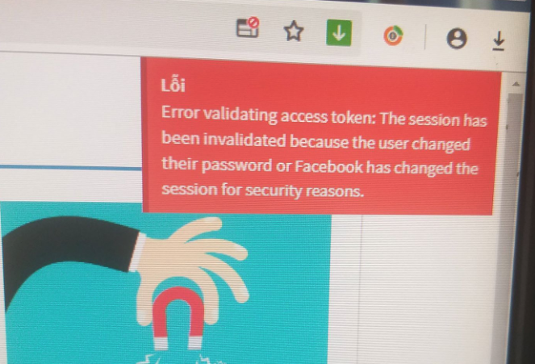

Auto inbox không hoạt động?
Nếu bạn vẫn chưa tìm hiểu về cách tạo và sử dụng Auto inbox thì vui lòng tham khảo bài viết này. Còn nếu đã biết sử dụng nhưng Auto inbox không hoạt động thì đọc tiếp nội dung bên dưới nhé ;)
1. Nguyên nhân
Có rất nhiều nguyên nhân khiến bot không hoạt động, gồm:
Bạn vừa đổi mật khẩu facebook. Bạn bị facebook checkpoint.
Bạn đã dùng hết 1,000 tin nhắn FREE.
Quên bật Auto Inbox trong menu Tăng trưởng.
Dán link hoặc ID bài post Video (nên chọn bài post hơn là dán link hoặc dùng ID).
Bình luận với tư cách fanpage.
Khách hàng chặn tin nhắn từ page hoặc dưới 18 tuổi.
Bạn chưa cấp quyền Auto Inbox cho AhaChat.
2. Cách khắc phục
2.1 Bạn vừa đổi mật khẩu facebook. Bạn bị facebook checkpoint
Đối với trường hợp (3) thì bạn phải vào Triển khai và bấm vào nút Làm mới quyền.

2.2 Bạn đã dùng hết tin nhắn FREE
Chú ý là mỗi tài khoản Free bạn được cấp 1,000 tin nhắn (bao gồm auto inbox) miễn phí, nếu hết số lượng này bạn phải Nâng Cấp để tiếp tục sử dụng.
2.3 Quên bật Auto inbox
Đây là tình huống phổ biến nhất, có thể bạn đã lỡ tay tắt chức năng này ngay trong hệ thống AhaChat. Bạn hãy kiểm tra và bật lại để hệ thống tiếp tục hoạt động.
2.4 Dán link hoặc ID bài post video
Lưu ý một số bài post video FB sẽ không chạy được Auto Inbox nếu ta dán link trực tiếp vào. Vì vậy ta sẽ dùng cách chọn bài post từ danh sách để đảm bảo chạy ổn định.
2.5 Bình luận với tư cách là fanpage
Phải bình luận bằng tài khoản cá nhân thì chức năng này mới hoạt động.
2.6 Người dùng đã từng bình luận và nhận được tin nhắn tự động tại bài đăng này
Chức năng này chỉ gửi tin nhắn đến người bình luận một lần duy nhất, những lần tiếp theo người bình luận sẽ không nhận được tin nhắn tự động nữa.
2.7 Chưa bật "Allow people contact my Page..."
2.8 Bị FB đánh dấu là spam hoặc bạn bị Checkpoint
Spam ở đây là một trong 2 trường hợp, một là bài đăng của bạn đang spam và hai là trả lời bình luận của bạn không sử dụng spintax. Với lỗi này FB sẽ chặn tính năng like và comment của chủ bot khoảng 1-3 ngày.
Bấm vào nút "Lỗi gần nhất" và sẽ thấy dòng chữ này "You're temporarily restricted from liking posts, Pages and comments, and from reviewing Pages...".
Đến trang Cài đặt > Vai trò xem các nick có đang hoạt động không
Nếu xuất hiện hình tam giác màu đỏ thì nick này đã lỗi nên hãy bấm vào để xem 1 trong 3 nguyên nhân sau:
- Nguyên nhân 1: Nick này đã bị FB chặn like và comment, bạn nên thêm nick khác vào để thay thế hoặc chờ cho đến khi FB bỏ chặn. Lỗi thông báo cho trường hợp này là "You're temporarily restricted from liking posts, Pages and comments, and from reviewing Pages..."
- Nguyên nhân 2: Nick này bị lỗi token nên phải Đăng xuất rồi Đăng nhập vào lại AhaChat. Sau đó bấm Làm mới quyền để hoạt động lại bình thường. Lỗi thông báo cho trường hợp này là "Error validating access token the user has not authorized application..."
- Nguyên nhân 3: Nick này đã add vào ahachat, nhưng sau đó bị xóa quyền Quản trị viên hoặc Biên tập viên trên page. Bạn cần phải thêm quyền lại vào page trên FB. Lỗi thông báo cho trường hợp này là "Permission error..."
2.9 Khách hàng chặn tin nhắn từ page hoặc dưới 18 tuổi
Nó sẽ hiển thị lỗi khi bấm vào nút "Lỗi gần nhất" tại cài đặt auto inbox. Và trường hợp này không thể khắc phục được.
2.10 Bạn chưa cấp quyền auto inbox cho AhaChat
Nó sẽ hiển thị lỗi khi bấm vào nút "Lỗi gần nhất" tại cài đặt auto inbox.
Bước 1: Xóa app bằng cách truy cập https://www.facebook.com/settings?tab=business_tools (với cách này bạn vẫn sẽ không bị mất dữ liệu nên hãy yên tâm)
Bước 2: Truy cập https://ahachat.com và Đăng nhập lại!
2.11 Bạn đang dùng chatbot khác dẫn đến xung đột
Vui lòng truy cập https://www.facebook.com/settings?tab=business_tools để xoá chatbot khác ngoài
2.12 Cài đặt sai app trên fanpage
Vào cài đặt fanpage, chọn [Nhắn tin nâng cao > Cài đặt ứng dụng] như hình dưới.
2.13 Không nhận giới tính của khách hàng
Vào cài đặt fanpage, chọn [Nhắn tin nâng cao > Thông tin người dùng > Gửi xét duyệt] như hình dưới.
Lưu ý: mỗi tin nhắn tự động sẽ được gửi chậm nhất là 1 phút sau khi người dùng bình luận. Sau khi người bình luận nhận tin nhắn tự động, họ phải tương tác với bot (nhấn vào nút bấm hoặc trả lời tin nhắn) thì mới trở thành khách hàng.
Bạn có bất kỳ câu hỏi nào liên quan đến tính năng Auto Inbox trong AhaChat? Bạn muốn khởi chạy chiến dịch tiếp cận khách hàng của mình bằng Chatbot với một số lời khuyên chuyên môn từ Đối tác tiếp thị của Facebook? Đừng ngần ngại liên hệ với chúng tôi để có câu trả lời nhanh nhất và hiệu quả nhất! Tận hưởng công cụ chatbot miễn phí của chúng tôi mà không cần phải trả bất kỳ chi phí nào!